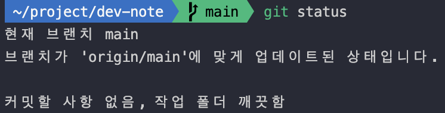
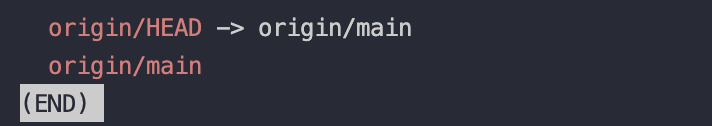
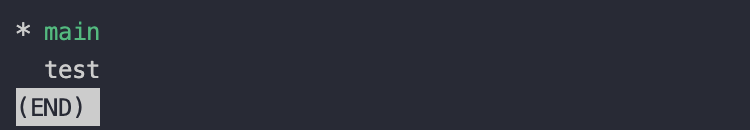
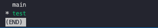

Git 브랜치(branch)
소프트웨어를 개발할 때 개발자들은 동일한 소스코드를 함께 동유하고 다루게 됩니다. 동일한 소스코드 위에서 어떤 개발자는 버그를 수정하고, 새로운 기능을 만들기도 하는데 서로 동일한 소스코드 기반으로 각각 다른 작업을 할 때 서로 다른 버전의 코드가 만들어 질 수 밖에 없습니다.
이럴 때, 우리는 여러 개발자가 동시에 다양한 작업을 할 수 있게 만들어 주는 기능인 Git branch를 사용합니다. Git branch는 즉 독립적으로 어떤 작업을 진행하기 위한 개념입니다.
각각의 브랜치는 다른 브랜치의 영향을 받지 않으며, 작업을 동시에 진행할 수 있습니다.
Git Branch 확인하기
내가 현재 위치한 Git branch 확인
git branch
초기 생성 시 main 브랜치만 존재하며, *로 표시되어 있는 브랜치가 현재 활성화 된 브랜치이다.
git status

위 명령어를 사용해도 내가 현재 어디 브랜치에 있는지 알 수 있다.
git branch -r

원격 저장소의 브랜치를 확인할 수 있다.
git branch -v
브랜치의 마지막 커밋 메세지를 확인할 수 있다.
git Branch 생성 및 이동
branch 생성
git branch test
test 라는 git branch를 생성한다는 의미다.

branch 이동
git switch [브랜치명]

방금 생성한 branch로 이동하려면 git switch를 이용하여 이동할 수 있다.
※ 이 과정을 한번에 하는 과정이 있다.
git switch -c [브랜치명]
브랜치를 만들면서 만든 브랜치로 이동하라는 명령어이다.
원격 브랜치와 같은 이름으로 로컨 브랜치를 생성 후 스위치 하는 방법
git switch -t origin/[원격 브랜치명]
Git branch 변경사항 복원
git restore .
git restore test.js
작업중인 파일을 복원할 수 있다.
Git stage된 파일 복구
git restore --staged .
git restore --staged test.js
Git branch 삭제
git branch -d test
Git 원격 브랜치 삭제
git push origin --delete [브랜치명]
생성한 branch를 원격 Repository에 push 하기
1. 생성한 branch로 이동한다
git switch test
2. git push를 진행한다
git push --set-upstream origin test # 로컬 레포지토리에서 리모트 레포지토리로 처음 push 할때 '--set-upstream' 옵션 추가
git push -u origin test # 위와 같은 의미이며 위 명령어를 줄인 명령어
git push # 처음 push 이후 트래킹 정보 설정이 되었을 시 push만 진행해도 사용 가능
위의 모든 과정을 마쳤으면 branch가 신규 생성된 것을 볼 수 있으며, 총 2개로 늘어난 것을 볼 수 있다.